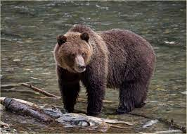

Lepus Foundation is a non-profit organization that is currently working to save wildlife species around the world. We are currently collaborating with other wildlife preservation organizations to help restore the habitats of the wildlife.
Our mission is to help save our wildlife from facing extinction and to also to bring safety & sanctuary to those who are facing problems from deforestation to poaching, pollution, cutting down forests, and climate change. The Earth is not going to heal itself. That's why we need to raise awareness about the critical state of our wildlife. Our mission addresses UN goals 13, 14, and 15. Climate action, Life below water, and Life on land. By working to achieve these goals, we can have a better habitat for animals to live in.
Many animals are losing their homes due to people cutting down forest, pollution, poaching, and climate change. The earth is a system. If one of the system's parts stops functioning properly, it crashes. This is why it is important to save our wildlife! It matters because the Earth is in a critical state right now. If we don't do something now, we will continue to lose more and more of our wildlife.
There are many ways that we can help save our wildlife. We need to get it out there that the animals are dying because they have no clean and safe habitat. We can let the people help out by planting trees, picking up trash, using renewable energy sources, and adopting animals. We hope to give the wildlife a proper habitat and safe place to live out in the wild which will help save the wildlife.